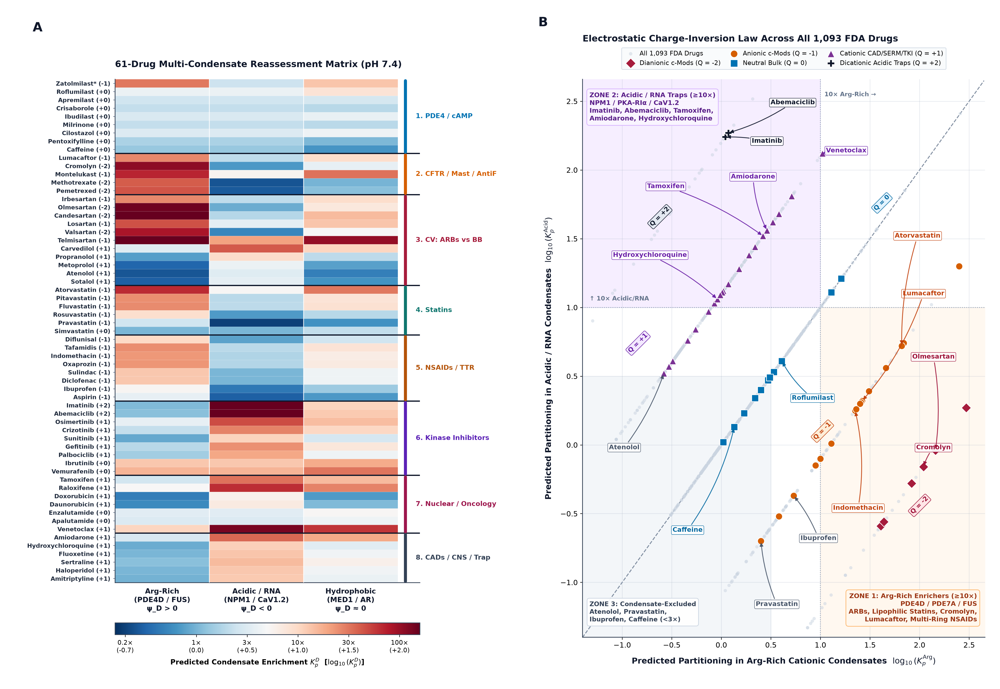
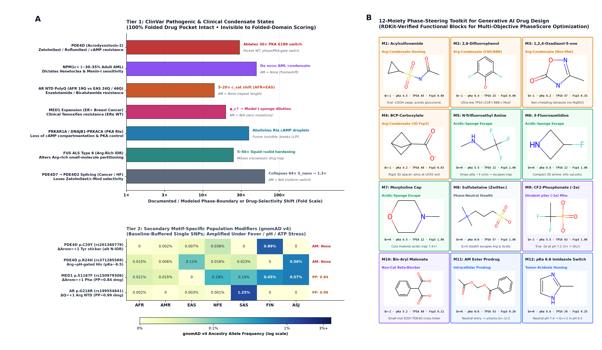
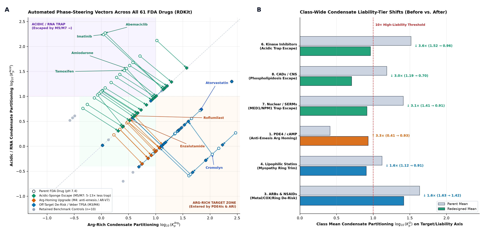
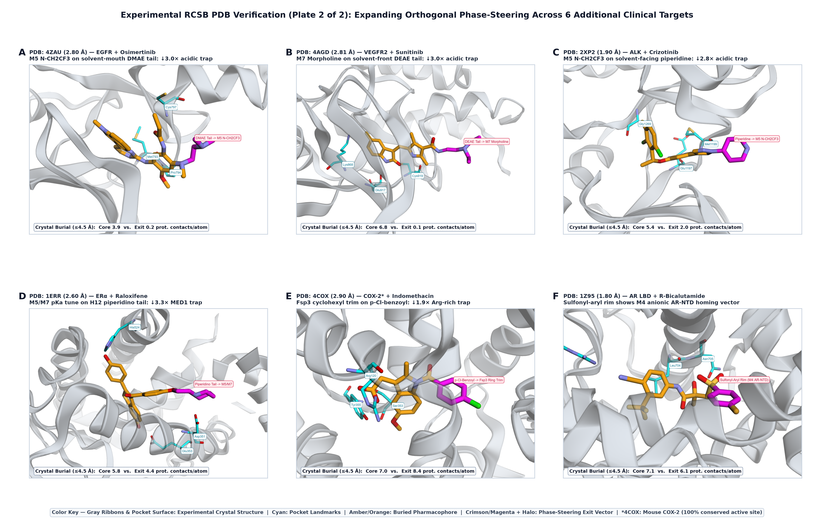

Phase-Partitioned Allosteric Pharmacology & Condensate Drug Design
Phase-Partitioned Allosteric Pharmacology: Brush-Insulated Signaling Complexes & Phase-Gated PDE4D
Coupled Models I–IV (two-phase IC50 lever rule, HARBS/LARBS & Zatolmilast 64× S_nano, Lumacaftor hormesis & PEP_STAB28 binary fork, confined 3D spine reaction–diffusion PDE), PDB: 3G4G structural stratification, closed-loop med-chem paradox fixes, Old-vs-New paradigm kinetics, and multi-scale MD/Binodal/3D views.


Phase-Aware Pharmacological Strategy, Proteome & Channelome IDR Targetability, 12-PDB Validation & Human Clinical V_d,ss
Scales the Electrostatic Charge-Inversion Law across 61 flagship FDA drugs, pairs ClinVar-pathogenic condensate genetics with scoped gnomAD v4 modifiers, proves geometric orthogonality across 12 human experimental PDBs + 4-target AutoDock Vina (exh=32), extends LLPS pharmacology to volatile anesthetics, maps 122 druggable targets + 62 cAMP/ATP/phospho human ion channels, demonstrates CMGC kinome & channelome GPU MD, and validates real clinical V_d,ss across 1,097 human IV drugs.

Fig 1 — 61-Drug Multi-Condensate Atlas
Fig 2 — Clinical Genetics + 12 Moieties
Fig 3 — 61-Drug Automated Redesigns Fig 4A — 6-PDB Exit Vectors (Plate 1)
Fig 4A — 6-PDB Exit Vectors (Plate 1)

Fig 4B — 6-PDB Exit Vectors (Plate 2) Fig 5 — Vina Validation & Gas Anesthetics
Fig 5 — Vina Validation & Gas Anesthetics
 Fig 6 — 122-Target IDR Map, CMGC MD & 1,097-Drug Clinical V_d,ss
Fig 6 — 122-Target IDR Map, CMGC MD & 1,097-Drug Clinical V_d,ss
Interactive 3D Atomic Viewers & Kinetics Simulator
Machine-Readable Datasets & Audits
Fourteen Concrete Ways Any Lab Can Falsify This Framework
| # | Domain | Sharp Quantitative Prediction | Result That Falsifies Our Model |
|---|---|---|---|
| 1 | PDE4D Thermal Cliff | Human PDE4D7 shows a non-Arrhenius activity break at 40–42 °C (melt) and 4 °C (collapse), whereas avian PDE4D & ΔN-IDR PDE4D2 do not. | Linear identical Arrhenius slopes for Human PDE4D7, Chicken PDE4D, and PDE4D2 across 5–42 °C. |
| 2 | PEP_STAB28 Sign Test | Non-catalytic 28-aa peptide condenses PDE4D (3.7×) and shifts β₂AR/Aβ→CaV1.2 cAMP opposite to Roflumilast (if facilitated) or same sign (if silenced). | PEP_STAB28 fails to shift PDE4D c_sat in vitro or has zero effect on PDE4D7 cAMP kinetics. |
| 3 | Cromolyn c_sat Cliff | Cromolyn IC50 against PDE4D7 drops ≥10× once [PDE4D7] crosses c_sat vs. dilute PDE4D2 (or R→K condensate-dead mutant). | Identical high-µM IC50 above and below c_sat (and identical on WT vs. R→K PDE4D7). |
| 4 | Lumacaftor Acute Paradox | Lumacaftor binds PDE4D UCR2 (non-metal) and acutely modulates cAMP faster than CFTR trafficking; ortho-diMe LUMA_MOD2 weakens PDE4D without killing CFTR rescue. | Zero direct PDE4D7 binding/activity for Lumacaftor in cell-free SPR/enzymology at 0.1–10 µM. |
| 5 | M7 Morpholine Kinases | IMAT_MOD1_MORPH & ABEM_MOD1_MORPH retain WT biochemical Ki (ΔΔG ≈ 0) while dropping acidic/MED1/lysosomal partitioning ≥5× in cells. | >5-fold loss in cell-free ABL1/CDK6 Ki OR zero reduction in cellular acidic-condensate/lysosomal trapping. |
| 6 | Buried Hinge Negative Ctrl | N-methylating the buried hinge NH (IMAT_NEG_HINGE / ABEM_NEG_HINGE) abolishes binding, proving exit-vector orthogonality is geometrically specific. | Hinge N-methyl analog retains full WT kinase potency. |
| 7 | Divalent pSer vs Glu | True pSer (-2e) / M9 -CF2PO3(2-) drives ≥3× stronger PDE4D condensation than net-charge-matched monovalent Glu (-1e). | Identical c_sat for 2× pSer vs. 3× Glu at matched net charge. |
| 8 | ClinVar PDE4D p.S190A | Acrodysostosis-2 p.Ser190Ala (VID:30037) directly ablates PKA-driven PDE4D condensation (30.5× → ~4×) while keeping the catalytic active site 100% WT. | PKA phosphorylates and condenses S190A identically to WT PDE4D7. |
| 9 | AR PolyQ & NPM1c+ Condensates | Ancestry-divergent AR 19Q vs 24Q/46Q and AML NPM1c+ (VID:13998) shift Enzalutamide / Venetoclax intradroplet Kp without altering folded LBD/BCL-2 Kd. | Identical droplet Kp and cellular IC50 across AR polyQ repeat lengths or WT vs. NPM1c+ condensates. |
| 10 | Gas Anesthetics on Synapsin-1 | Clinically equipotent 1 MAC Sevoflurane / Isoflurane / Propofol fluidize or shift c_sat of purified Synapsin-1 / PSD-95–SynGAP condensates, whereas non-immobilizer F6 does not. | Zero shift in Synapsin-1 / SynGAP / Gephyrin c_sat or FRAP viscosity at 1–2 MAC across all volatile agents. |
| 11 | Hydrostatic Pressure Reversal | Applying 100–150 atm hydrostatic pressure in an optical cell reverses volatile-anesthetic c_sat / viscosity shifts on Synapsin-1 / lipid-coupled droplets (ΔV_phase > 0). | Hydrostatic pressure shifts Synapsin-1 droplets in the SAME direction as Sevoflurane instead of opposing it. |
| 12 | Synaptic IDR MAC Modifiers | Motif-proximal SYN1 p.T567A (4.74% AFR, beside CaMKII S566) / p.H433Y (1.37% ASJ) shift Synapsin-1 c_sat under CaMKII signaling stress. | Identical CaMKII-gated Synapsin-1 phase boundary & anesthetic response for WT vs. IDR alleles. |
| 13 | CMGC Kinome Paralog Selectivity | CLK2 (+32 Arg-IDR) + SRPK2 (-44 Lys-brush) undergo heterotypic splicing-speckle coacervation while DYRK1A (10.6% His) vs. DYRK1B (2.5% His) decouple under pH 6.5 vs. 7.4—enabling phase-gated paralog selectivity without ATP-pocket differences. | Identical cellular vs. biochemical IC50 ratios for anionic vs. cationic pan-CLK/SRPK or DYRK1A/DYRK1B inhibitors at pH 6.5 and 7.4. |
| 14 | Clinical V_d,ss Aromatic-Cation Rescue | Replacing a solvent-facing basic amine with neutral M7 Morpholine (or trimming ≥2 aromatic rings at fixed Q=+1) reduces in vivo tissue V_d,ss ≥3× at matched cLogP without losing target affinity. | Zero reduction in in vivo V_d,ss when neutralizing solvent-facing basic amines on lipophilicity-matched leads. |